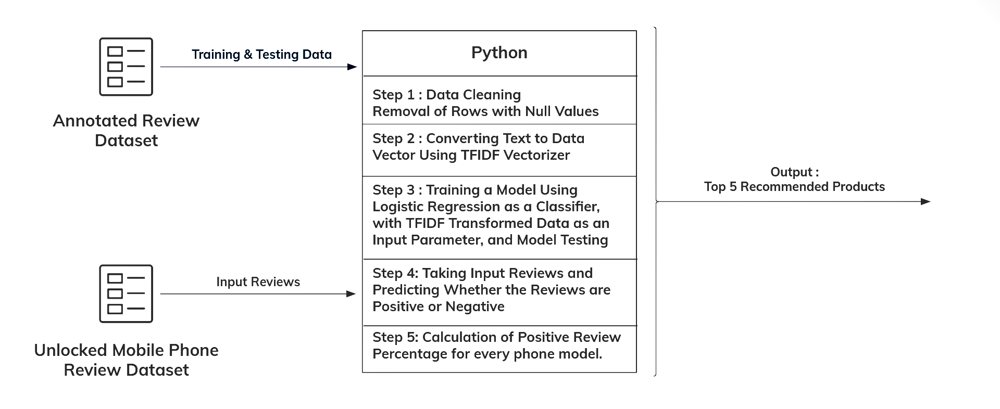

Opinion Mining and Product Recommendation System
Natural Language Processing Project

The aim of this project was to develop a Sentiment Analysis Model which would then be used to make a product recommendation system. The product recommendation system be used to reccomend
top "N" products based on text based consumer reviews. The methodology followed to create the project is shown in the diagram below.

The technolgies used were -
• Python
• Pandas
• SciKit-Learn
An "Amazon Fine Food Reviews" Dataset [ Available: https://www.kaggle.com/snap/amazon-fine-food-reviews ] was used to train the model. The dataset given to the model to analyze was "Amazon Reviews : Unlocked Mobile Phones" [ Availabe: https://www.kaggle.com/PromptCloudHQ/amazon-reviews-unlocked-mobile-phones]
The resulting model had an accuracy of 90.76% and was able to successfully reccomend the top "N" products from the "Amazon Reviews : Unlocked Mobile Phones" dataset.